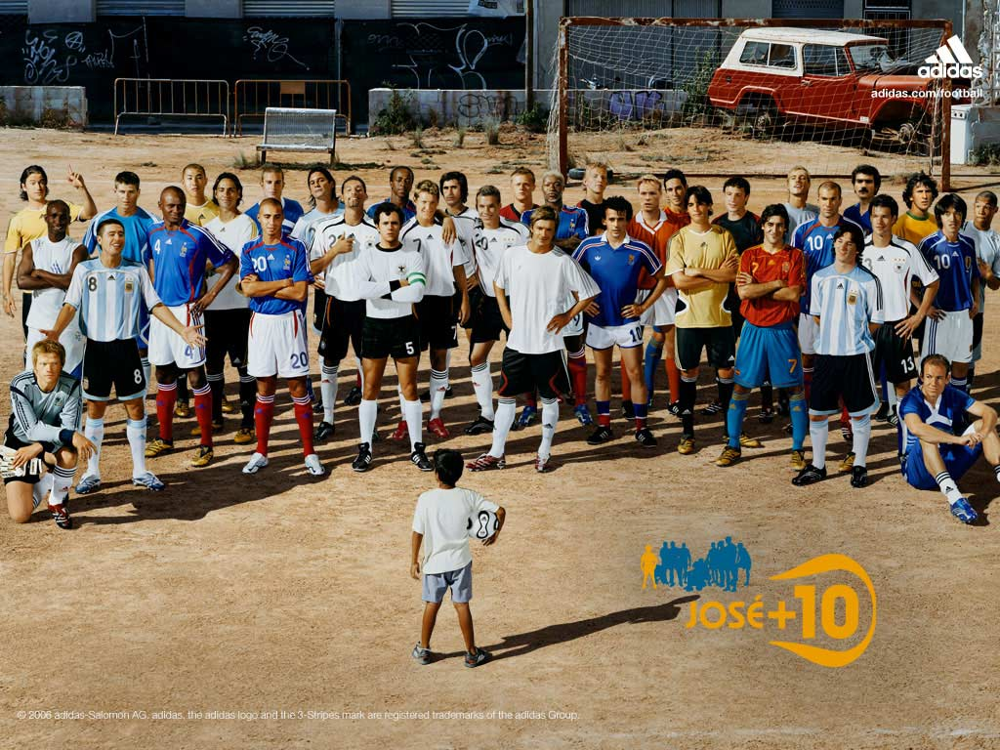
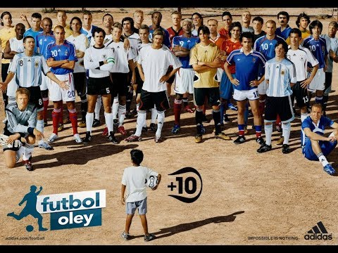
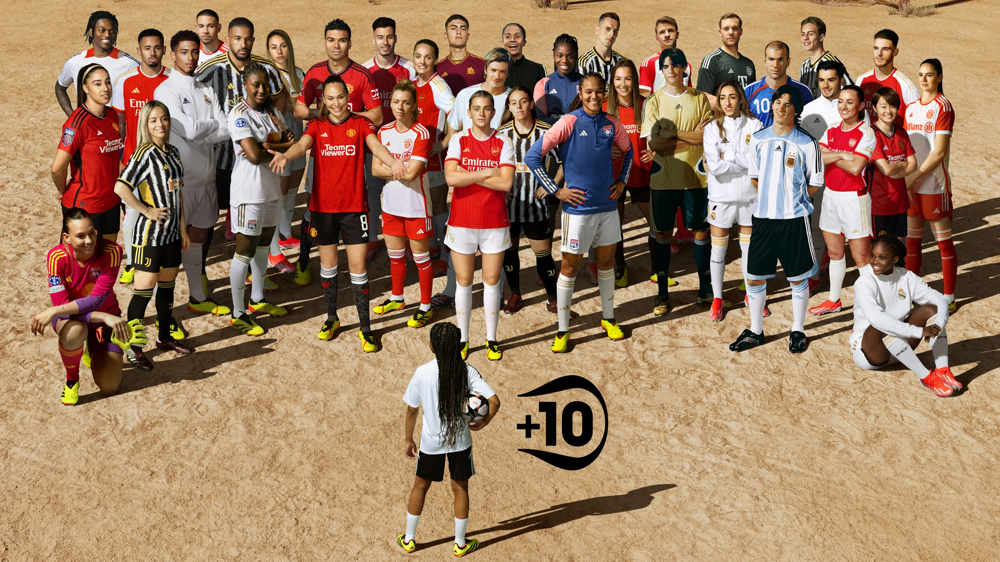

案例发生了什么
谁参与Adidas
发生节点 / 场景2006 德国世界杯；全球；官方赞助商/装备权益
传播形式童年游戏放大型；球星混编型；跨年代资产型
传播核心两个普通孩子在街头玩“选人组队”，喊出的名字却真的把齐达内、贝克汉姆、卡卡等球星叫到身边；连已经退役的传奇也能加入。宏大的世界杯阵容，被压缩成人人小时候都玩过的一次挑队游戏。



两个普通孩子在街头玩“选人组队”，喊出的名字却真的把齐达内、贝克汉姆、卡卡等球星叫到身边；连已经退役的传奇也能加入。宏大的世界杯阵容，被压缩成人人小时候都玩过的一次挑队游戏。
电视主片用选人过程逐个揭晓球星；群像主视觉承担户外与零售传播；2024 年 adidas 又以女子足球议题重拍经典团队照，证明这套画面仍能被改写，而不只是怀旧档案。
MARKETING KNOWLEDGE ROUTER · 营销知识路由器
营销启发卡
把历届经典的记忆点、商业结构和迁移方法放在同一层阅读。 卡片底部按主题连接全站相关案例、经典方法与深度文章。
01核心动作
孩子喊出一个名字
童年选队、梦想成真和“如果所有传奇都归我选”的拥有感；孩子喊出一个名字，世界级球星就从街角走进他的队伍。
02传播与商业机制
adidas 用长期足球人物与赛事资产替孩子兑现幻想
adidas 用长期足球人物与赛事资产替孩子兑现幻想，让官方身份从标识露出变成“我能召集整个足球世界”的能力；电视主片用选人过程逐个揭晓球星；群像主视觉承担户外与零售传播；2024 年 adidas 又以女子足球议题重拍经典团队照，证明这套画面仍能被改写，而不只是怀旧档案。
03可复用的方法
越昂贵的球星矩阵
越昂贵的球星矩阵，越需要一个极其普通的人类动作来组织；“孩子选队”比“群星合影”更容易让观众进入。
适用条件、风险与证据
- 本页补充的 2024 画面是对 2006 经典的再激活，不应误写成原始投放现场；原版素材仍需继续补充官方历史档案。
- 后续复盘还应补齐发布主体、时间线、真实执行图、媒介范围和结果口径；没有这些证据时，不把行业评价或赛事总热度写成品牌增量。
资料与来源
官方资料与原始来源
市场 / 权益
全球
官方赞助商/装备权益
创意打法
童年游戏放大型；球星混编型；跨年代资产型
来源按品牌/官方发布、官方账号留存、权威媒体、获奖案例库分层记录；品牌与奖项自报结果不视作独立审计。